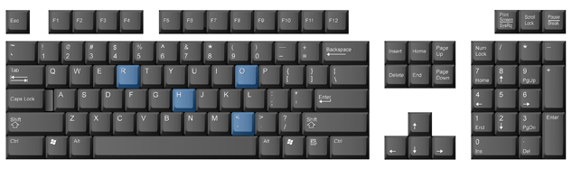
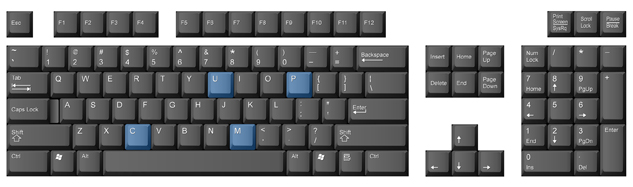

Project 1: Learning the Alphanumeric and Symbol Keys
Other Keys Reached from Home-Row Position

The H Key
The H key is a sideways reach with the J finger. Anchor on the semi key, and reach sideways to the H key. Practise making this move a few times.
The R Key
The R key is a natural reach up from the F key with the F finger. Watch your fingers make this path and memorize the direction and distance.
The O Key
The O key is a natural upward reach with the L finger. Watch your finger make this path, and memorize the distance and direction. Anchor on the J key.
The Comma (,) Key
You are about to learn the next punctuation mark—the comma. A comma is always followed by one space.
The comma is typed with the K finger in a natural downward reach. Anchor on the semi key.
Follow through Practice 3 to practise the H, R, O, and comma keys just covered. Take time to review previously covered keys as well.
H, R, O, and Comma
The H key uses the J finger (index) on your right hand.
jjj jhj hhh jjj hjh jhh has he she ash had half
The R key uses the F finger (index) on your left hand.
fff rrr fff frf frf rrf ffr far err fir road rotten
The O key uses the L finger (ring) on your right hand.
lll lol ooo lll how ode foe old ode; oak sod
The comma uses the K finger (middle) on your right hand. Remember to leave one space after a comma.
Kkk k,k ,,, kkk k,k it, an, or, if it is, as soon as, three
More Practice
sink rink link kink tone done lone none then than thin this
jots lots lets jets held herd hard hand rain raid said sail
Have you taken a break lately?
A Bunch More Alphabetic Keys

The C Key
The C key is a natural downward reach with the D finger. Anchor on the A key, and let your D finger make its move to the C key. Watch as your finger makes this path. Memorize the distance and the direction.
The P Key
The P key is struck with the semi finger. It is a natural upward reach from the semi key. Anchor on the J key. You might find that you need to move your hand a bit to help in this move if your little finger has trouble reaching the P key.
The U Key
The U key is struck with the J finger. It is a natural reach up from the J key. Anchor on the semi key, and move your index finger from the J key to the U key. Memorize the distance and direction.
The M Key
The M key is a natural downward reach with the J finger. Anchor on the semi key. Practise a few times, watching the distance and direction your finger travels from the J key to the M key.
Follow through Practice 4 to practise the C, P, U, and M keys just covered. Take time to review previously covered keys, as well as the new keys.
C, P, U, and M
The C key uses the D finger (middle) on your left hand.
ddd ccc ddd dcd ccd ddc ace can arc deck car cannot act
The P key uses the semicolon finger (pinky) on your right hand.
;;; ppp ;p; ;;p pp; ppp pen nap ape pen pal page pale
The U key uses the J finger (index) on your right hand.
jjj juj uuu jjj jju uuj jug flu urn jet just
The M key uses the J finger (index) on your right hand.
jjj mmm jmj mmj jjm me mom ham hem jam fame